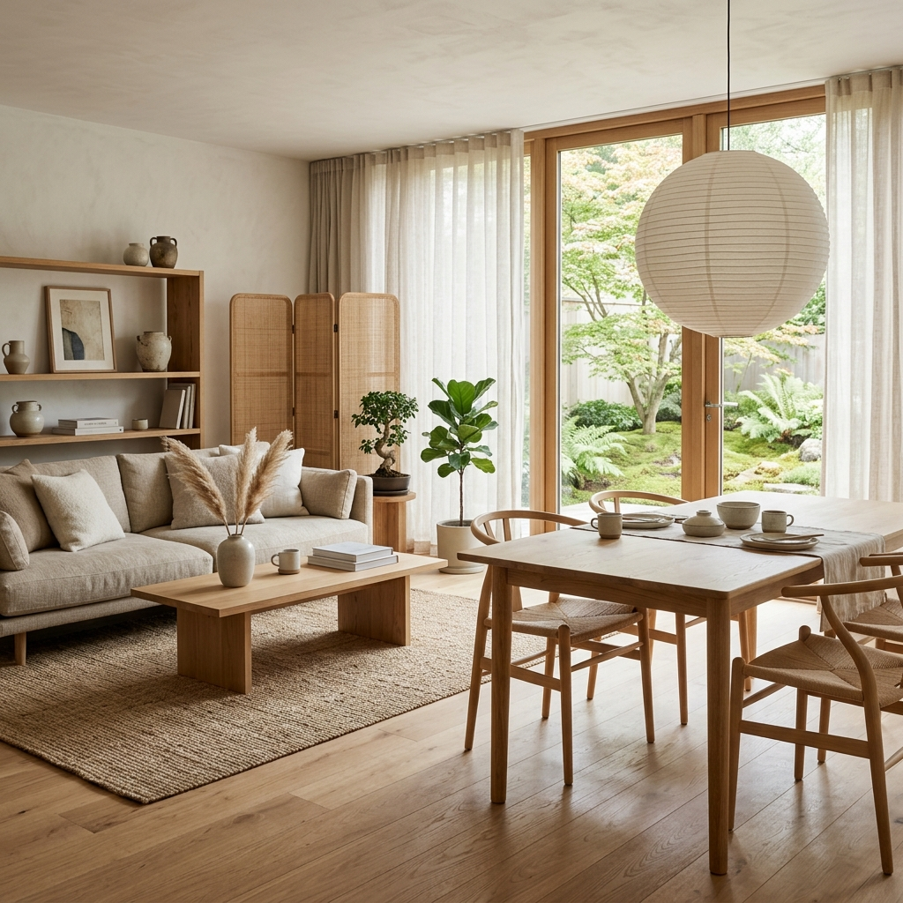
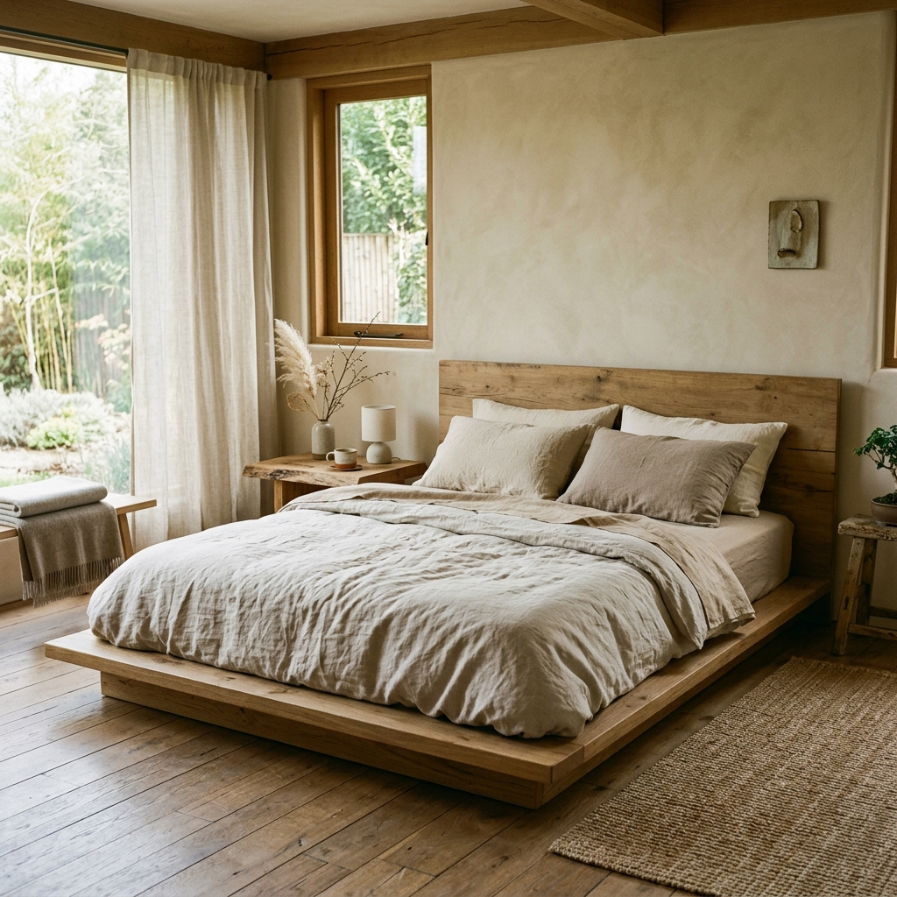
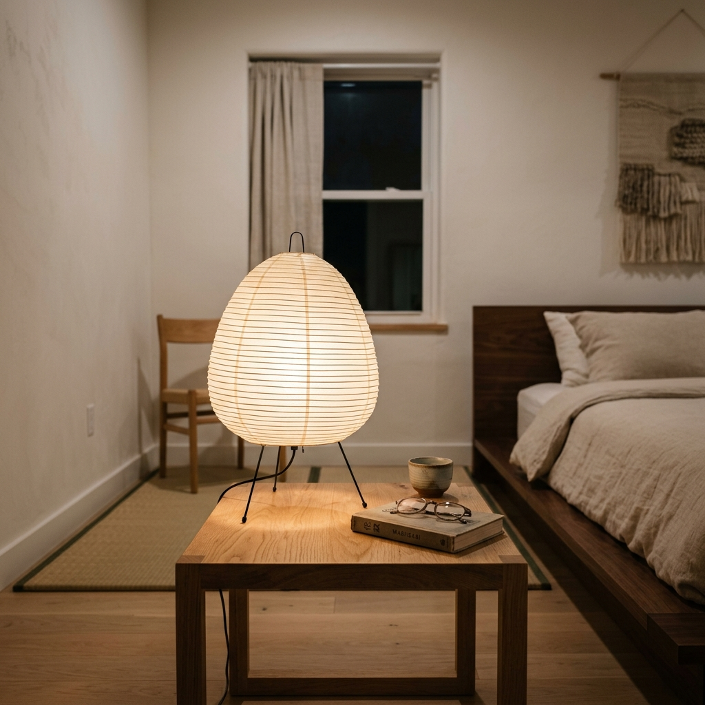
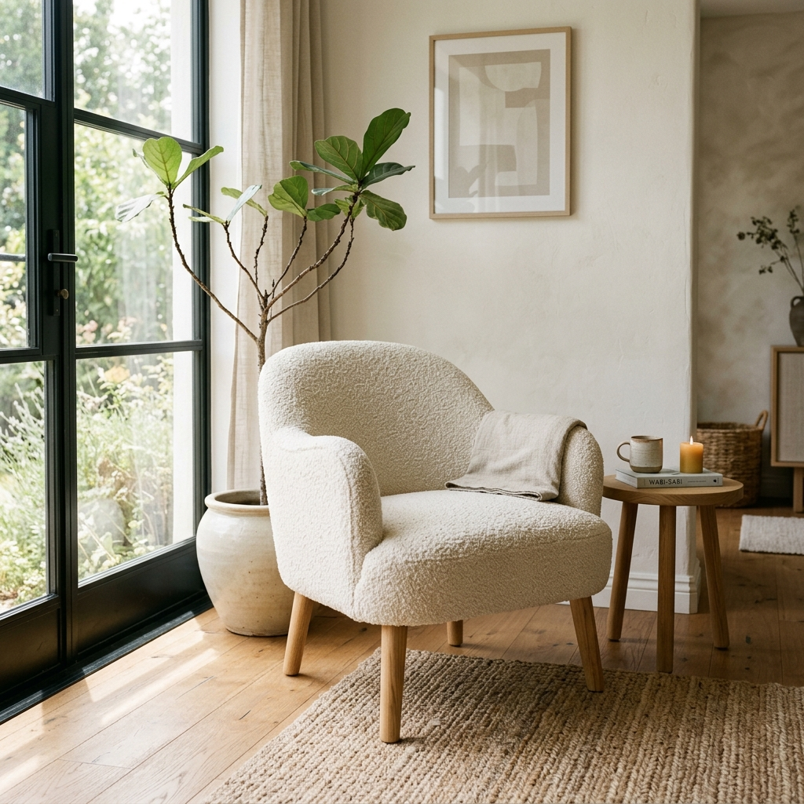
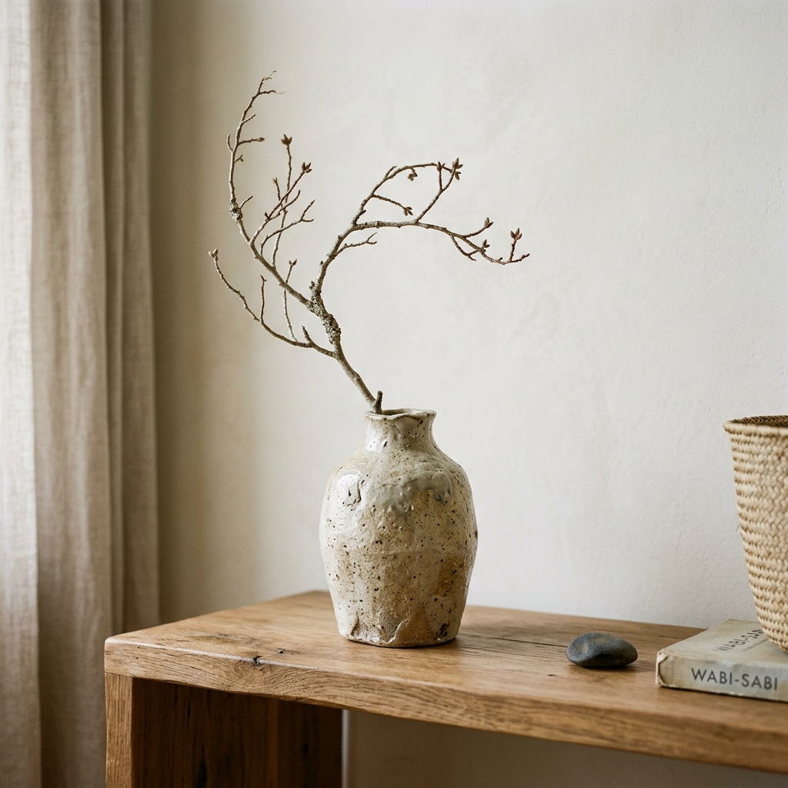
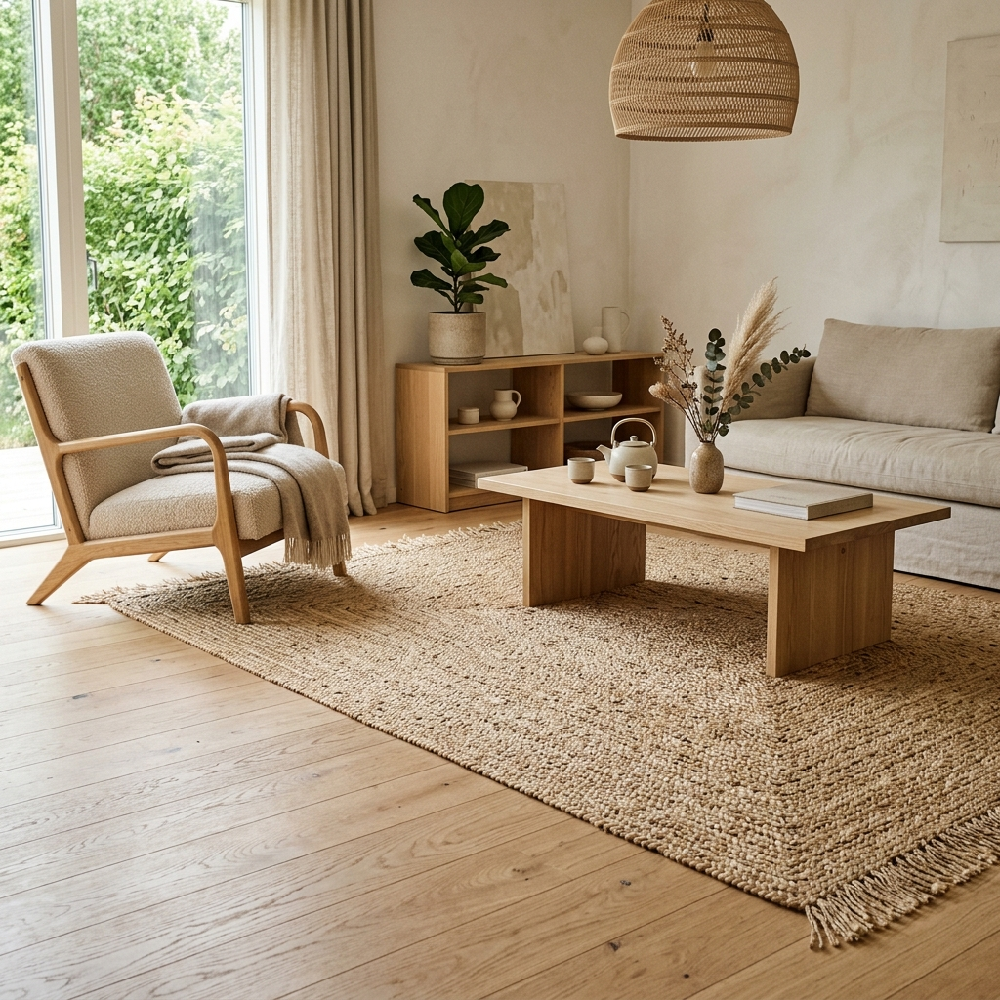
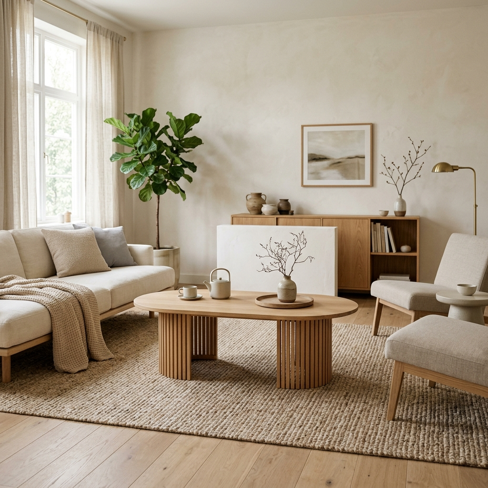
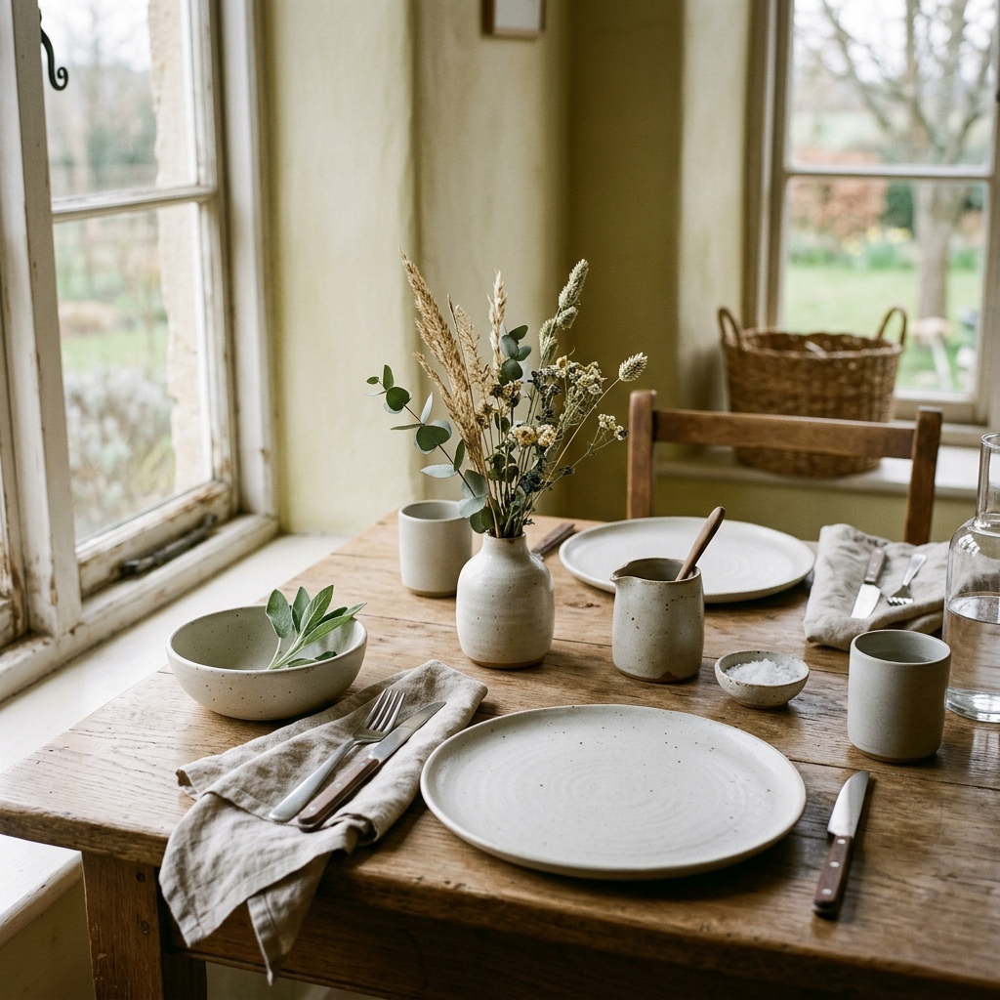

Japandi 101: The Perfect Blend of Japanese and Scandi Decor
Discover Japandi style, the trending design movement blending Japanese minimalism with Scandinavian coziness. Learn how to get the look with affordable Amazon finds.
I'll be honest—when I first heard the term "Japandi" a couple of years ago, I thought it was just another passing internet buzzword. But then I saw it in a real, lived-in home, and it completely stopped me in my tracks.
At first glance, Japan and Scandinavia might seem worlds apart. But when it comes to how they approach their homes, they share a deep, almost spiritual connection. Both cultures prize utter simplicity, a heavy reliance on natural materials, and a profound respect for true craftsmanship.
When you take the cozy, sink-in-and-relax comfort of Scandinavian hygge, and combine it with the elegant, intentional imperfection of Japanese wabi-sabi, you get Japandi. It’s a style that feels incredibly sleek, yet undeniably warm, inviting, and human.
"Japandi isn't just a look. It's the feeling of walking into a room and instantly exhaling."
If you're tired of spaces that feel cluttered or overly sterile, Japandi is the ultimate antidote. Here is your complete guide to mastering the look, along with 7 stunning, affordable Amazon finds to help you bring this peaceful aesthetic into your own home.

The Unspoken Rules of Japandi
Before you start adding things to your cart, it's important to understand what makes Japandi work. It’s not about buying everything with a wood tone; it's about curating with intention.
- Warm, Earthy Palettes: Move away from stark, hospital whites. You want to embrace oatmeal, warm beige, muted sage greens, and soft, natural terracottas.
- Raw, Natural Materials: Think pale oak, rich dark walnut, bamboo, rattan, unbleached linen, and raw, unpolished ceramics.
- Low-Profile Living: Japanese design heavily favors furniture that sits closer to the floor. This creates a beautifully grounded, expansive feeling in the room.
- Intentionality: Quality over quantity, always. Every single item on display should either serve a distinct purpose or bring you profound joy. If it doesn't, put it away.
Low-Profile Platform Bed
Japandi bedrooms are all about lowering your center of gravity to induce a state of zen before you even go to sleep. A low-profile wooden bed frame without a massive, overbearing headboard instantly makes your ceilings feel taller. It strips away the visual bulk, leaving just the essential structure.
DESIGN TIP
Pair a low wood frame with slightly oversized, rumpled linen bedding. The contrast between the rigid, clean lines of the wood and the soft, messy drape of the linen is pure Japandi perfection.

Recommended: Low Profile Wood Platform Bed Frame Minimal
Paper Lantern Lamp
I cannot stress this enough: harsh overhead lighting ruins the Japandi vibe instantly. Soft, beautifully diffused light is absolutely crucial. Traditional Japanese paper lanterns (often inspired by Isamu Noguchi) have made a massive comeback, and for good reason.
A paper table lamp acts as a stunning, sculptural art piece during the day, and casts a warm, moon-like, incredibly flattering glow at night.

Recommended: Japanese Paper Lantern Table Lamp
Boucle Accent Chair
To prevent minimalism from feeling cold and sterile, you have to introduce heavy texture. This is where the Scandinavian influence really shines. A cream boucle accent chair with clean, natural wood legs bridges the gap perfectly between Scandi physical comfort and Japanese structural elegance.

Recommended: Boucle Accent Chair Cream Wood Legs
Textured Ceramic Vase
Wabi-sabi is the Japanese appreciation for the beauty of imperfection. When shopping for decor, skip the shiny, perfectly symmetrical, mass-produced glass. Instead, opt for a textured, matte ceramic vase that looks like it was shaped by human hands.
Pop a single, dramatic, asymmetrical dried branch (like olive or dried cherry blossoms) inside for a high-end, architectural look that feels incredibly deliberate.

Recommended: Wabi-Sabi Ceramic Vase Textured Neutral
Natural Jute Area Rug
Ideally, Japandi floors are beautiful, bare wood. But we all need a little softness underfoot, especially in the living room. When a rug is necessary, it must feel organic. A handwoven jute or sisal rug adds necessary warmth and rich texture without competing for attention or breaking the calm, neutral color palette.

Recommended: Natural Jute Woven Area Rug
Slatted Wood Coffee Table
Slatted wood (often called tambour) is a signature element of traditional Japanese architecture. It’s a brilliant design choice because it adds visual interest through the interplay of light and shadow, without adding any actual clutter to the room.
An oval slatted coffee table breaks up the sharp, rigid lines of modern sofas and brings a beautiful, rhythmic movement into your living space.

Recommended: Slatted Wood Coffee Table Oval
Matte Stoneware Dinnerware
Japandi isn't just about how your living room looks; it's a holistic lifestyle. It changes how you interact with your home. Try swapping out your generic, glossy white plates for a set of matte, earthy stoneware.
There is something about eating off of rustic, textured ceramics that forces you to slow down, be present, and truly appreciate the mindfulness of a meal.

Recommended: Stoneware Dinnerware Set Matte Neutral
Less, But Better
The real secret to Japandi design is learning the fine art of restraint. It is knowing exactly when to stop adding things to a room.
By intentionally investing in a few high-quality, nature-inspired pieces rather than filling your home with disposable decor, you create a space that doesn't just look magazine-ready—it actively lowers your stress levels the second you walk through the front door.
Start small. Add a paper lamp to your nightstand or swap your glossy vase for a textured matte one, and see how the energy of the room shifts.